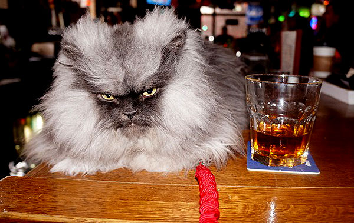

Grumpy Cat
Grumpy Cat (born April 4, 2012), real name Tardar Sauce, is a female cat and Internet celebrity known for her grumpy facial expression. Her owner Tabatha Bundesen says that her permanently grumpy-looking face is due to feline dwarfism. Grumpy Cat's popularity originated from a picture posted to the social news website reddit by Tabatha's brother Bryan on September 22, 2012. It was made into an image macro with grumpy captions. "The Official Grumpy Cat" on Facebook has over 1.1 million Likes. Grumpy Cat was featured on the front page of The Wall Street Journal on May 30, 2013.
Grumpy Cat's Official Site

Vacuum Cat
Click the Image to learn more about Vacuum Cat and view his official site!

Maru Cat
Click the Image to learn more about Maru Cat and view his official site!

Colonel Meow
Click the Image to learn more about Colonel Meow and view his official site!